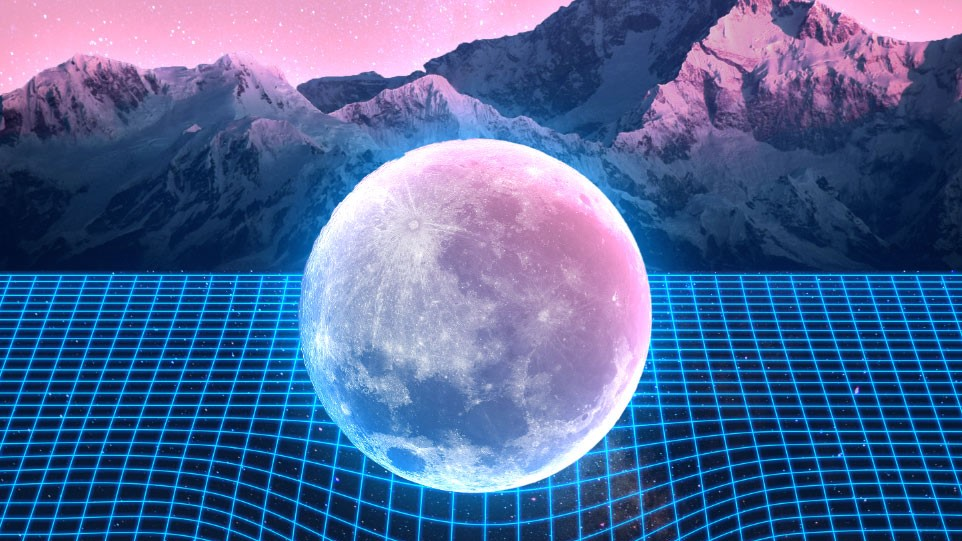
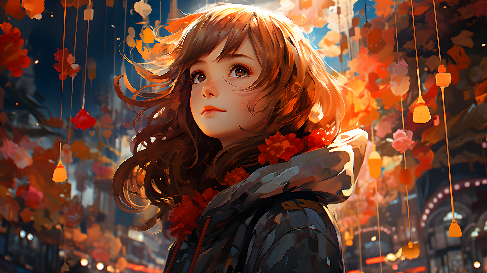
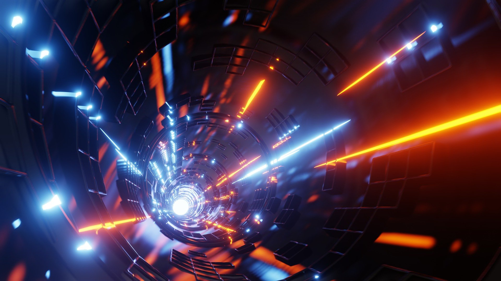
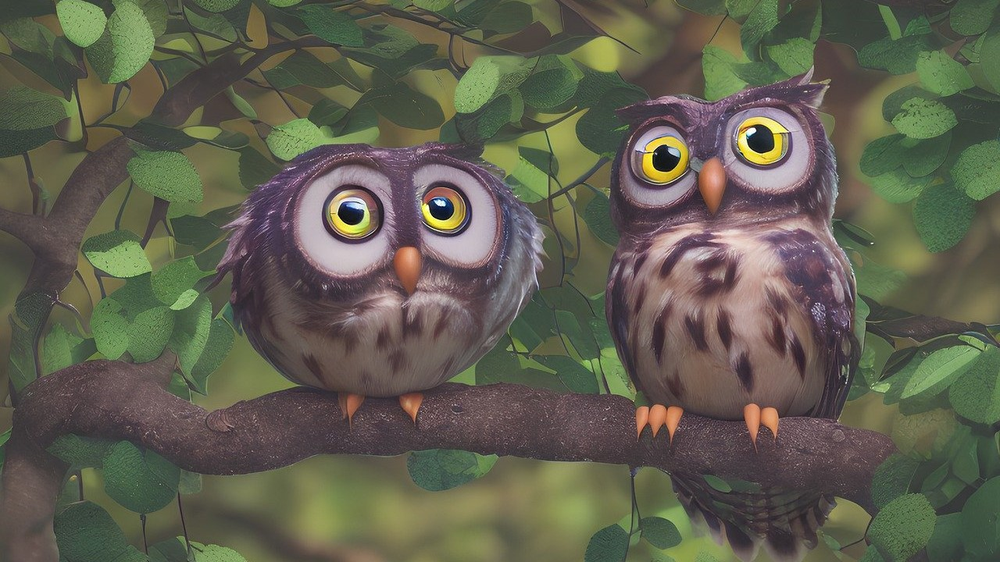
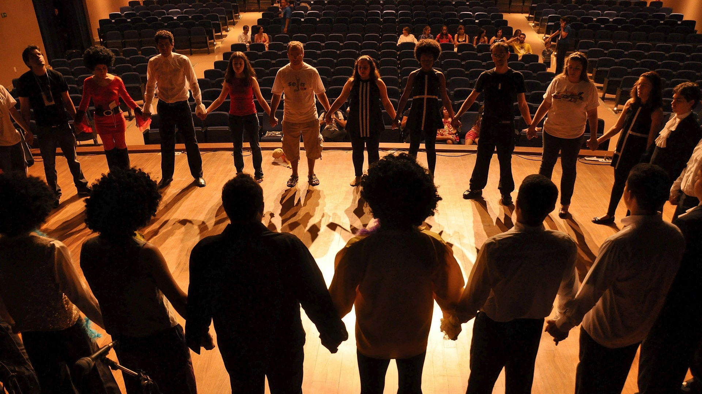
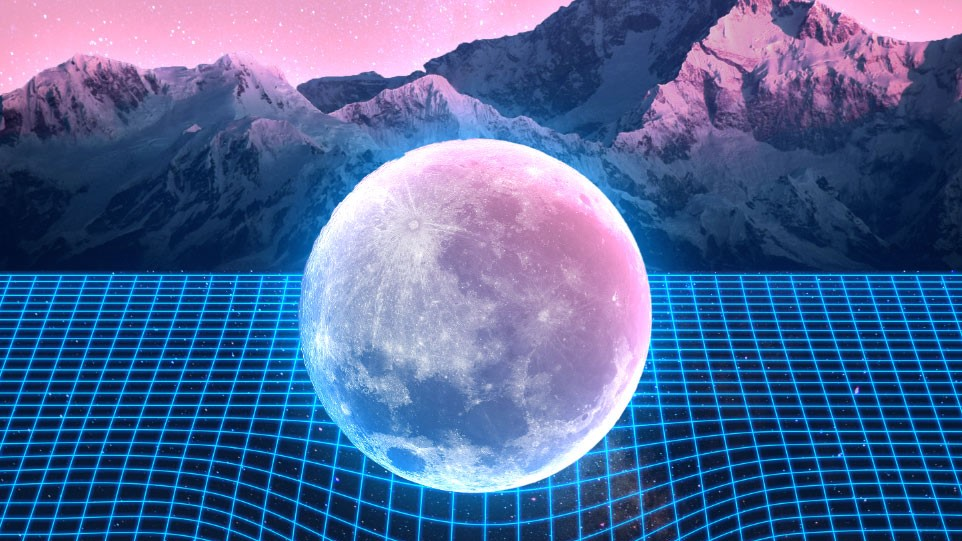
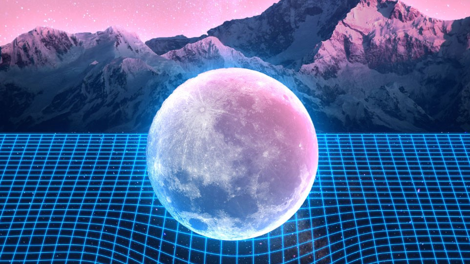
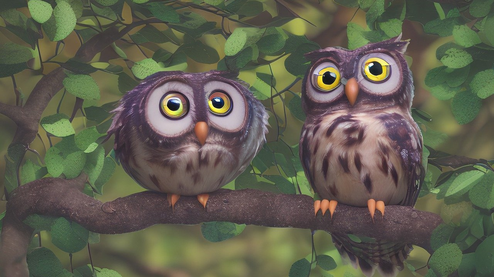
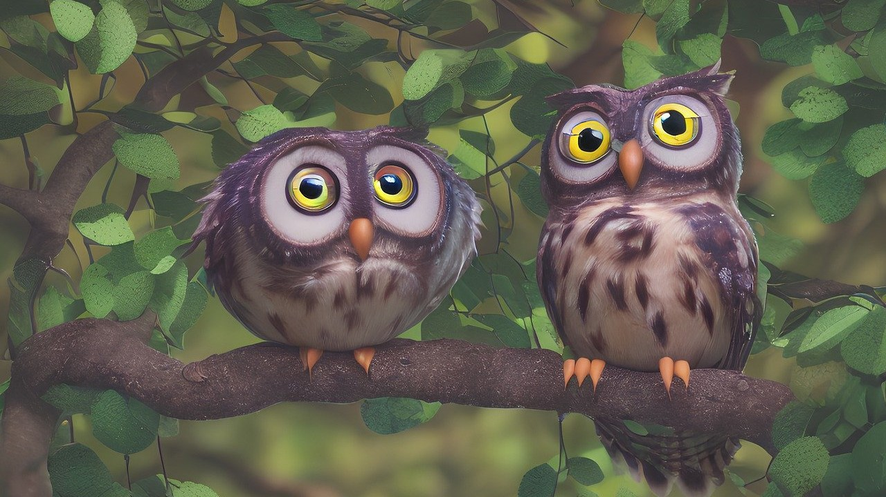

Készen állsz arra, hogy megelevenítsd a saját történeted?
Nálunk a kamera mögé bújhatsz, de nem csak filmeket készíthetsz - építhetsz világokat, teremthetsz karaktereket, és felfedezheted a videójátékok és a 3D grafika varázslatos univerzumát is! A Gruffacsór Stúdióban az ötleteid nem maradnak meg a fejedben - életre kelnek a képernyőn!
Te vagy a rendező, a játéktervező, és a jövő kreatív látnoka
Itt nem csak tanulni fogsz, hanem alkotni! Az eszközök, amikkel dolgozunk, a legmodernebb filmes, grafikai és játéktechnológiák. És tudod mi a legjobb? Mindezt úgy fejlesztjük, hogy közben a személyiséged és tehetséged is kiteljesedjen! Mert nem csak a képek és a játékok számítanak - te vagy a főszereplő!
Kreatív, technológiai, és vizuális élmény egy helyen
Legyen szó moziról, videójátékról vagy animációról, mi segítünk abban, hogy elérd a következő szintet. Csatlakozz hozzánk, és válj a digitális művészet, filmkészítés és játékkészítés mestereivé - a te világod várja, hogy megalkosd!
Készen állsz a nagy utazásra?
Nézd meg programjainkat, és kezdjük el együtt a kalandot! A film, a 3D grafika és a videójátékok világa rád vár.
Légy részese a digitális jövőnek!
A számítógépes grafika alapjai betekintést nyújtanak a digitális képek létrehozásának és megjelenítésének világába, ahol megtanuljuk, hogyan ábrázoljunk formákat, színeket és textúrákat számítógépes környezetben. A kétdimenziós grafika a síkbeli ábrázolás technikáira fókuszál, ahol karakterek, hátterek és elemek síkban jelennek meg, és megtanuljuk az animáció, a vektor- és pixelgrafika alapjait is. !!! Ezek az ismeretek alapozzák meg a kreatív projektek sikeres megvalósítását a digitális térben.
Bevezető ismeretek
A számítógépes grafika alapjai közé tartozik a képek, animációk és más vizuális elemek létrehozásának és manipulálásának tudománya és művészete. Ez a terület különféle technikákat és algoritmusokat használ a képek generálására, amelyeket képernyőn vagy nyomtatott formában jelenítenek meg. A számítógépes grafika magában foglalja a geometriai modellezést, a színtudományt, a képfeldolgozást és a vizuális megjelenítést, és számos alkalmazási területe van, beleértve a játékfejlesztést, a filmipart, az orvosi képalkotást és a virtuális valóságot.

Számítógépes grafika
A kétdimenziós számítógépes grafika olyan képi ábrázolást jelent, amely szélességi és magassági dimenziókban létezik, de nincs mélysége. A 2D grafika széles körben használatos például játékokban, felhasználói felületekben, animációkban és illusztrációkban. Ebben a formában a képek vektoros (matematikai úton definiált alakzatok, amelyek méretezhetőek minőségromlás nélkül) vagy raszteres (pixelekből álló képek) formátumban jelennek meg.
Digitális rajzolás
A filmes illusztrátorok kulcsszerepet játszanak a filmkészítés folyamatában, mivel ők hozzák létre a film látványvilágának elsődleges koncepcióit és vizuális terveit. Ezek a művészek részletes storyboardokat, koncepciórajzokat és látványterveket készítenek, amelyek segítenek a rendezőknek, producereknek és más kreatív szakembereknek elképzelni a jelenetek végső kinézetét.

3D, nyomtatás, modellezés!
A háromdimenziós grafika alapjai lehetőséget nyújtanak arra, hogy virtuális térben alkossunk valósághű tárgyakat, karaktereket és környezeteket, amelyek különböző nézőpontokból vizsgálhatók. A CAD (számítógéppel segített tervezés) mérnöki és műszaki tervezésre fókuszál, lehetővé téve pontos és részletes modellek létrehozását, amelyeket gyakran használnak ipari termékek, épületek és gépek tervezésénél.
A 3D nyomtatás ezen modellek fizikai tárgyakká alakítását teszi lehetővé, ahol a digitális terv valós formát ölt rétegről rétegre. A poligoniális modellezés a 3D grafika alapvető technikája, amelyben sokszögek, úgynevezett poligonok segítségével hozunk létre komplex formákat és felületeket. Ez a módszer különösen fontos a játékokban, animációkban és filmekben használt karakterek és objektumok megalkotásában.
Állj a kamera mögé, ahol a filmkészítés foglalkozásai izgalmas lehetőséget kínálnak mindazoknak, akik szeretnék megismerni a filmes világ varázslatos kulisszatitkait és saját alkotásaikat létrehozni. Fedezd fel, hogyan válhatnak ötleteid látványos filmes történetekké, és csatlakozz hozzánk, hogy megtapasztald a filmkészítés művészetét!
Háromdimenziós grafika
A háromdimenziós grafika a számítógépes grafika egy ága, amely térbeli objektumok létrehozásával és megjelenítésével foglalkozik. Az alapját a matematikai modellezés képezi, amely során a geometriai formák, mint például pontok, vonalak és poligonok, segítségével hoznak létre háromdimenziós objektumokat. Ezeket az objektumokat koordinátarendszerben helyezik el, ahol mindegyik pontnak x, y és z értéke van, meghatározva azok helyzetét a térben.

Poligoniális modellezés
Fedezd fel a 3D modellezés izgalmas világát, és válj a digitális művészetek mestereivé! Ezek a készségek nemcsak a játékfejlesztés és filmgyártás területén nyitnak meg számtalan lehetőséget, hanem az építészet, a virtuális valóság és a reklámipar számára is nélkülözhetetlenek. A 3D modellezés során virtuális tárgyakat és karaktereket alkothatsz meg, amelyeket profi fényviszonyok és megvilágítás között mutathatsz be, élethű textúrával.
3d környezetek és filmkészítés
A filmkészítés foglalkozásai izgalmas lehetőséget kínálnak mindazoknak, akik szeretnék megismerni a filmes világ varázslatos kulisszatitkait és saját alkotásaikat létrehozni. A résztvevők megtanulhatják a filmkészítés alapvető lépéseit, a forgatókönyvírástól kezdve a rendezésen át a vágásig. Ezek a foglalkozások gyakorlati és elméleti tudást egyaránt nyújtanak, miközben a tanulók saját rövidfilmjeiket készíthetik el. Fedezd fel, hogyan válhatnak ötleteid látványos filmes történetekké, és csatlakozz hozzánk, hogy megtapasztald a filmkészítés művészetét!
Fedezd fel a játékok és az animáció varázsát!
A platformjáték-fejlesztés során azokat az alapvető mechanikákat fedezzük fel, amelyek segítségével interaktív, ugrálós és felfedezős játékokat készíthetünk, különös hangsúlyt fektetve a pályatervezésre, a karaktermozgásokra és az akadályok megvalósítására.
Képzeld el, ahogy a saját animációid életre kelnek a képernyőn! Az animációkészítő kurzusunk során elsajátíthatod a vizuális történetmesélés titkait, és alkothatsz olyan mozgóképeket, amelyek érzelmeket és üzeneteket közvetítenek. Tapasztald meg, hogyan épülnek fel a karakterek, hogyan kel életre egy történet, és hogyan formálhatod meg a digitális világot a saját elképzeléseid szerint! Most van itt az idő, hogy megvalósítsd álmaidat - észleltesd, énekeld és animáld meg a világot a saját egyedi stílusoddal!
Játékfejlesztés
A platformjáték-fejlesztés a 2D játékok egyik legnépszerűbb műfaja, ahol a játékosnak különböző platformokon kell ugrálnia, akadályokat kikerülnie, és ellenfeleket legyőznie, miközben egy cél felé halad. A platformjátékok megalkotásához a fejlesztőknek gondosan meg kell tervezniük a pályák kialakítását, a karakterek mozgását, valamint a fizikai törvények szimulálását, például a gravitációt és az ugrásokat.

Rajzfilm és animáció
A digitális rajzfilm-készítés modern módszerei forradalmasították az animációs ipart, lehetővé téve a művészek számára, hogy sokkal hatékonyabban és kreatívabban dolgozzanak. Az animáció az a technika, amely mozgóképet hoz létre statikus képek sorozatának gyors egymásutánban történő bemutatásával. Az animáció különböző formái közé tartozik a hagyományos kézi rajz, a stop-motion, és a számítógépes animáció.
Válj önmagad legjobb verziójává!
Komplex tehetséggondozó programunk feltárja és felszínre hozza a benned élő lehetőségeket. Lépj a színpadra a dráma és színjátszás foglalkozásokon, kipróbálva magad különböző szerepekben, és fejleszd színészi képességeidet és önbizalmadat. Ismerd meg mélyebben önmagadat az önismereti gyakorlatok és tesztek segítségével, amelyek révén magabiztosabbá válhatsz és hatékonyabban tudsz kommunikálni.
Ám a zene is a kreativitás egyik legfontosabb eszköze! Az ének-zenei kurzusunk révén felfedezheted a hangok világát, és megtanulhatod, hogyan alakíthatod át a dallamokat és ritmusokat olyan érzelmi utazásokká, amelyek mély hatással vannak a hallgatókra. Fejleszd a vokális és zenei képességeidet, és add elő a saját zenédet, amely megszólaltatja a szíveket! Csatlakozz hozzánk, és tapasztald meg, hogyan ötvözheted a vizuális és a zenei művészeteket, hogy olyan egyedi projekteket hozz létre, amelyek valóban kiemelkednek.
Fejleszd tehetségedet, ismerd meg önmagad, és légy része egy támogató közösségnek, amely segít elérni a céljaidat!
Színészek
Fedezd fel a színjátszás, önismeret, beszéd, testmozgás és tánc világát! Ezek a foglalkozások nemcsak a művészi készségeidet fejlesztik, hanem mélyebb önismeretre is szert tehetsz. A színjátszás segítségével különböző karakterek bőrébe bújhatsz, miközben a beszédtechnika révén tökéletesíted az artikulációdat és hangképzésedet. A testmozgás oktatásokkal finomítod a mozdulataidat, hogy hitelesen jeleníts meg minden szerepet, a tánc pedig dinamikus és látványos elemekkel gazdagítja az előadásaidat. Csatlakozz hozzánk, és lépj színpadra magabiztosan, önazonosan és professzionálisan!

Ének-zene
Az ének és zene foglalkozások kiváló lehetőséget kínálnak mindenkinek, aki szeretné felfedezni a zene varázslatos világát és kibontakoztatni kreativitását. Ezek a foglalkozások nemcsak a zenei tehetség fejlesztésére szolgálnak, hanem arra is, hogy a résztvevők jobban megismerjék önmagukat és másokat, valamint magabiztosabban lépjenek fel különböző élethelyzetekben. A közös munka során a résztvevők megtanulják, hogyan dolgozzanak csapatban, és hogyan hozzanak létre egy teljes zenei produkciót az ötlettől a megvalósításig.
Pályázatok
Kreatív írás
Pályázati felhívás írók számára. Küldd be novellád, esszéd vagy versesköteted!

 

 
